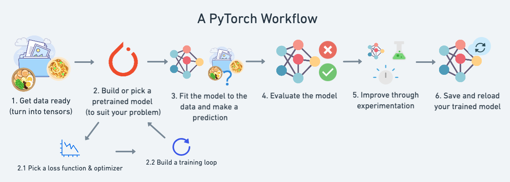
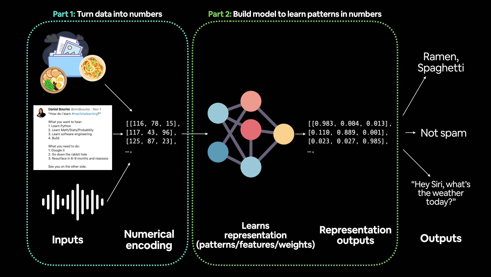
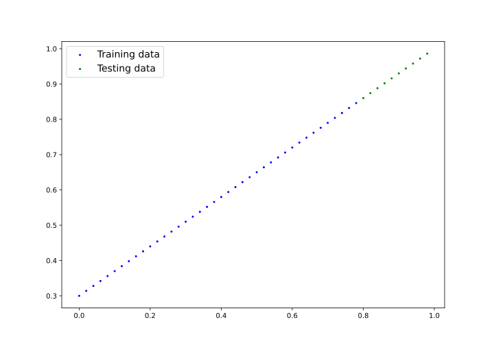
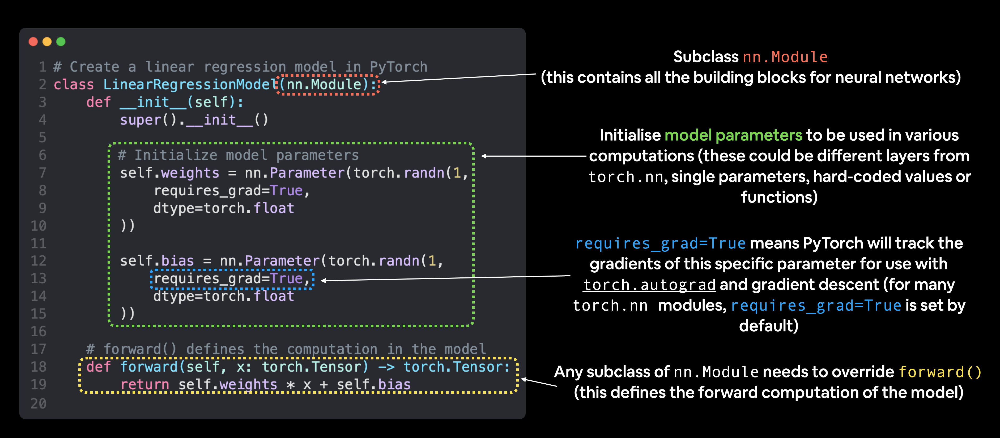
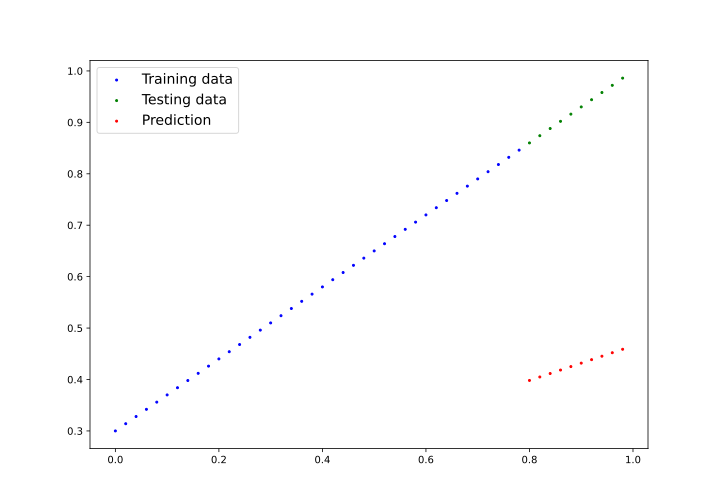

1. Intro
-
ML和DL的本质essence是获取数据，构建算法(如神经网络)来发现
其中的模式pattern，并使用发现的模式来预测未来predict future；

import torch
# nn contain all pytorch building block for neural network
from torch import nn
import matplotlib.pyplot as plt
# check PyTorch version
torchVersion = torch.__version__
what_were_covering = {1: "data (prepare and load)",
2: "build model",
3: "fitting the model to data (training)",
4: "making predictions and evaluating a model (inference)",
5: "saving and loading a model",
6: "putting it all together"
}
torchVersion,what_were_covering1.2. Building Model
-
构建模型：来学习数据中的模式，还将选择损失函数、优化器并建立训练循环；
-
to learn pattern in data，also choose loss function，
optimizer and build training loop；
1.3. Fitting Model
-
将模型与数据拟合(训练)，有数据和模型后，让模型(尝试)在(训练)数据中找到模式；
-
fitting model to data (training)，get data and model，
let model(try to) find pattern in (training) data；
1.4. Prediction Evaluating
-
预测和评估模型(推理)，模型在数据中发现的模式，将其发现与实际(测试)数据比较；
-
making prediction and evaluating model (inference)，model found
pattern in data，compare its finding to actual (testing) data；
2. Data
2.1. Introduction
-
Data Preparing and Loading
-
ML中的数据可以是任何能想到的事物，如excel spreadsheet，
任何类型图像，(youtube)视频，音频，蛋白质(protein)结构，文本等；

-
ML由两部分组成：A：数据；B：选择或构建的模型；
-
使用线性回归linear regression创建具有已知参数parameter(模型可学习的事物)
的数据，看是否可使用梯度下降gradient descent来建立模型来评估这些参数； -
对相关术语，无需特别关心，因没太大意义，会看到实际应用；
# create *known* parameter
bias = 0.3
weight = 0.7
# create data
start = 0
end = 1
step = 0.02
X = torch.arange(start,end,step).unsqueeze(dim=1)
y = weight * X + bias
X[:10],y[:10]-
X：horizontal_feature，y：vertical_label；
(tensor([[0.0000],
[0.0200],
[0.0400],
[0.0600],
[0.0800],
[0.1000],
[0.1200],
[0.1400],
[0.1600],
[0.1800]]),
tensor([[0.3000],
[0.3140],
[0.3280],
[0.3420],
[0.3560],
[0.3700],
[0.3840],
[0.3980],
[0.4120],
[0.4260]]))2.2. Split Data
-
split data into training and test set
-
注：处理真实数据时，此步骤通常在项目开始时完成，测试集应始终与所有其它数据分开；
希望模型能学习训练数据，然后在测试数据上对其评估，
以了解它对未见过示例example的泛化generalize程度
| Type | Percentage | Purpose |
|---|---|---|
TrainingSet |
60% ~ 80% |
模型从数据中学习，如在学期semester中学习的课程资料 |
ValidationSet |
10% ~ 20% |
模型根据数据进行调整，如模拟考试 |
TestingSet |
10% ~ 20% |
模型根据数据进行评估，以测试学到的知识，如期末考试 |
import torch
# nn contain all pytorch building block for neural network
from torch import nn
import matplotlib.pyplot as plt
# check PyTorch version
torchVersion = torch.__version__
# create *known* parameter
bias = 0.3
weight = 0.7
# create data
start = 0
end = 1
step = 0.02
X = torch.arange(start,end,step).unsqueeze(dim=1)
y = weight * X + bias
X[:10],y[:10]
# create training(80%)/testing(20%) split
train_split = int(0.8 * len(X))
X_train,y_train = X[:train_split],y[:train_split]
X_test,y_test = X[train_split:],y[train_split:]
print("X：horizontal_feature，y：vertical_label")
print("training:(X_train:{}, y_train:{})\ntesting:(X_test:{},y_test:{})"
.format(len(X_train),len(y_train),len(X_test),len(y_test)))print("X：horizontal_feature，y：vertical_label")
training:(X_train:40, y_train:40)
testing:(X_test:10,y_test:10)2.3. Visualization
import torch
from torch import nn
import matplotlib.pyplot as plt
def plot_prediction(train_data=X_train,
train_label=y_train,
test_data=X_test,
test_label=y_test,
prediction=None):
"""
plot training data,test data and compare prediction
"""
plt.figure(figsize=(10, 7))
# plot training data in blue
plt.scatter(train_data,train_label,c="b",s=4,label="Training data")
# plot test data in green
plt.scatter(test_data,test_label,c="g",s=4,label="Testing data")
if prediction is not None:
# plot prediction in red (prediction were made on test data)
plt.scatter(test_data,prediction,c="r",s=4,label="Prediction")
# show legend
plt.legend(prop={"size": 14});
plot_prediction();
plt.savefig("VisualizeDataSplitting.svg")
3. Build Model
-
已有数据，构建模型来使用蓝点预测绿点；
# create Linear Regression Model Class
# almost everything in PyTorch nn.Module (think of this as neural network lego block)
class LinearRegressionModel(nn.Module):
def __init__(self):
super().__init__()
# 1：start with random weight(this will get adjusted as model learn)
# dtype=torch.float：PyTorch love float32 by default
# requires_grad=True：can we update this value with gradient descent?
self.weight = nn.Parameter(torch.randn(1,dtype=torch.float),requires_grad=True)
self.bias = nn.Parameter(torch.randn(1,dtype=torch.float),requires_grad=True)
# forward define computation in model
# x：input data，e.g. training/testing feature
def forward(self, x: torch.Tensor) -> torch.Tensor:
# linear regression formula (y = m*x + b)
return self.weight * x + self.bias3.1. Model Building Essential
-
Pytorch有四个(give或take)基本模块，可用来创建几乎任何类型的神经网络；
-
它们是 torch.nn，torch.optim，torch.utils.data.Dataset
和 torch.utils.data.DataLoader；
| Module | Memo |
|---|---|
torch.nn |
|
torch.nn.Parameter |
|
torch.nn.Module |
|
torch.optim |
|
def forward() |
|
| Module | Memo |
|---|---|
nn.Module |
contain larger building block(layer) |
nn.Parameter |
contain smaller parameter like weight and |
forward() |
tell larger block how to make calculation on |
torch.optim |
contain optimization method on how to improve parameter |

-
通过对nn.Module子类化subclassing来创建Pytorch模型的基本构建块，
对nn.Module的子类对象，必须定义forward()方法；
3.2. Checking Model Content
-
用创建的类来创建模型实例，并使用 parameters() 检查参数；
-
使用 state_dict() 获取模型的状态(模型包含的内容)；
import torch
from torch import nn
import matplotlib.pyplot as plt
# set manual seed since nn.Parameter are randomly initialzied
torch.manual_seed(42)
# create model instance(nn.Module subclass that contains nn.Parameter)
model_0 = LinearRegressionModel()
# check nn.Parameter within nn.Module subclass we create
print(list(model_0.parameters()))
# list named parameter
print(model_0.state_dict())[Parameter containing:
tensor([0.3367], requires_grad=True),
Parameter containing:
tensor([0.1288], requires_grad=True)]
OrderedDict({'weight': tensor([0.3367]), 'bias': tensor([0.1288])})3.3. Making Prediction
-
making prediction via torch.inference_mode()；
-
将测试数据X_test传递给它，看它对y_test的预测有多接近；
# Make predictions with model
with torch.inference_mode():
y_pred = model_0(X_test)
# Note: in older PyTorch code you might also see torch.no_grad()
#with torch.no_grad():
# y_preds = model_0(X_test)
# check prediction
print(f"Testing Sample Number: {len(X_test)}")
print(f"Number of Prediction Made Number: {len(y_pred)}")
print(f"Predicted Value:\n{y_pred}")
plot_prediction(prediction=y_pred)
plt.savefig("VisualizeBuildModelPrediction.svg")
print(f"y_test - y_pred:\n{y_test - y_pred}")Testing Sample Number: 10
Number of Prediction Made Number: 10
Predicted Value:
tensor([[0.3982],
[0.4049],
[0.4116],
[0.4184],
[0.4251],
[0.4318],
[0.4386],
[0.4453],
[0.4520],
[0.4588]])
y_test - y_pred:
tensor([[0.4618],
[0.4691],
[0.4764],
[0.4836],
[0.4909],
[0.4982],
[0.5054],
[0.5127],
[0.5200],
[0.5272]])-
用 torch.inference_mode() 作为上下文管理器进行预测，
这就是 with torch.inference_mode(): 的作用； -
当用模型进行推理/预测时，会使用 torch.inference_mode()；
-
torch.inference_mode() 关闭turn off一系列功能，
如梯度跟踪gradient tracking，这是训练所必需，但不是推理所必需，
以使前向传播forward-pass，数据通过forward()更快； -
注：较旧的Pytorch代码中，可能还会看到 torch.no_grad() 用于推理，
torch.inference_mode() 和 torch.no_grad() 类似，
但 torch.inference_mode() 更新，更快，更受欢迎； -
注：每个测试样本有一个预测值，因我们使用的数据类型，对应的直线，一个X值映射到一个y值；
-
ML模型很灵活，可将100个X值映射到一个、两个、三个或10个y值,取决于我们在做什么；
